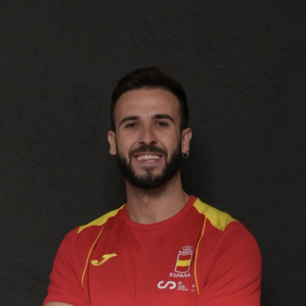

01 · Almacén
Crítico
Levantamiento de caja con torsión lumbar
Almacén · picking
Carga voluminosa con torsión de tronco sin pivotar pies. Lumbar L4-L5 en riesgo agudo.
Fase de Diagnóstico
Cuatro vectores confirman que el plan es ejecutable y que el impacto será visible en 12 meses.
Dirección y los dos Carlos comprometidos desde el primer día. El comité ya tiene la reducción de absentismo como prioridad.
1.046 trabajadores en pico estival. 50,7% del problema concentrado en dos puestos (camareros sala + operadores atracciones).
Los supervisores ya son el nodo de bajas, adaptaciones y servicio médico. Vehículo natural para hacer llegar el programa.
Absentismo Warner 10,32% vs sector restauración 5,39% — ×2,7. El problema no es estructural del sector, es específico de Warner.
Cinco secuencias grabadas durante la visita del 14 de mayo. Análisis biomecánico del gesto, patología predicha y tipo de error. Vídeos a velocidad real, sin audio.
Carga voluminosa con torsión de tronco sin pivotar pies. Lumbar L4-L5 en riesgo agudo.
Postura neutra, manejo ergonómico correcto. Patrón a replicar en el resto de operaciones.
Hombros >90°, extensión cervical, ~16h/turno acumuladas. Tendinopatía supraespinoso y cervicalgia.
~2.000 flexiones profundas por turno en pico. Hernia discal L4-L5 con riesgo elevado de lumbago.
Turnos largos sin alternancia postural. Fascitis plantar, insuficiencia venosa, cervicobraquialgia.
El Cambio
El modelo que funciona en PreZero, Meliá, Repsol, Eroski, Laboral Kutxa, DIA, Musgrave y otros. Adaptado a Warner.
Empleado sano → App + ejercicios → Clases grupales → Se mantiene sano.
Empleado con molestia → Chat o cita rápida → Plan personalizado → Sin baja.
Empleado lesionado → Tratamiento intensivo → Seguimiento diario → Vuelve antes.
Durante todo el programa
Servicios y herramientas disponibles desde el día 1 hasta el final del piloto.

Vuestro fisioterapeuta de referencia durante todo el programa, disponible tanto en sesiones presenciales como de forma digital.
Servicio de fisioterapia dentro del parque con fisioterapeutas colegiados.
El fisioterapeuta mantiene contacto activo con el empleado durante todo el programa.
Sesiones formativas y clases grupales para toda la plantilla, presenciales u online.
Comunicación ilimitada con tu fisioterapeuta asignado durante todo el programa.
Recomendaciones personalizadas para mejorar la postura y el entorno de trabajo.
Revisión periódica del gesto en nuevos puestos, atracciones o cambios de operativa.
Todo unido en un ecosistema
Acceso completo al ecosistema Fisify con gamificación integrada para los 1.046 empleados de Warner — sin importar departamento o turno.
Visibilidad en tiempo real
RRHH y dirección con la evolución del programa en tiempo real. Mismo lenguaje que el informe FREMAP, sin necesidad de traducción.
Roadmap
Plan estructurado de 4 meses diseñado para maximizar impacto en el pico estival y generar hábitos sostenibles para el resto del año.
Tener todo listo antes del lanzamiento para maximizar el impacto desde el día 1.
Que los 1.046 empleados conozcan el programa y puedan darse de alta desde el día 1.
Objetivo: dar de alta a la mayor parte de la plantilla en la app.
Diagnosticar a los empleados prioritarios y diseñar su plan personalizado.
El empleado pasa de "me tratan" a "yo me cuido".
Hábitos sostenibles combinando atención individual y grupal antes del pico estival.
Beneficio: cohesión de grupo entre departamentos. Foco en preparación para verano.
Objetivos
Retorno de inversión esperado · multiplicador sobre la inversión inicial del piloto.
-12% absentismo · cohorte tratada
-25% absentismo · cultura preventiva integrada
Inversión
Misma metodología. La diferencia es la intensidad presencial del fisioterapeuta. Sin permanencia · facturación mensual. Cifras del piloto de 4 meses.
Nuestro compromiso
Asumimos toda la responsabilidad para que este proyecto sea un éxito.
No venimos a cumplir un contrato: venimos a dar el 120% para que cada empleado note la diferencia.
Queremos que Parque Warner Madrid sea un caso de éxito de referencia en bienestar corporativo dentro de Parques Reunidos. Un proyecto del que ambos estemos orgullosos y que marque el estándar en la industria del ocio.